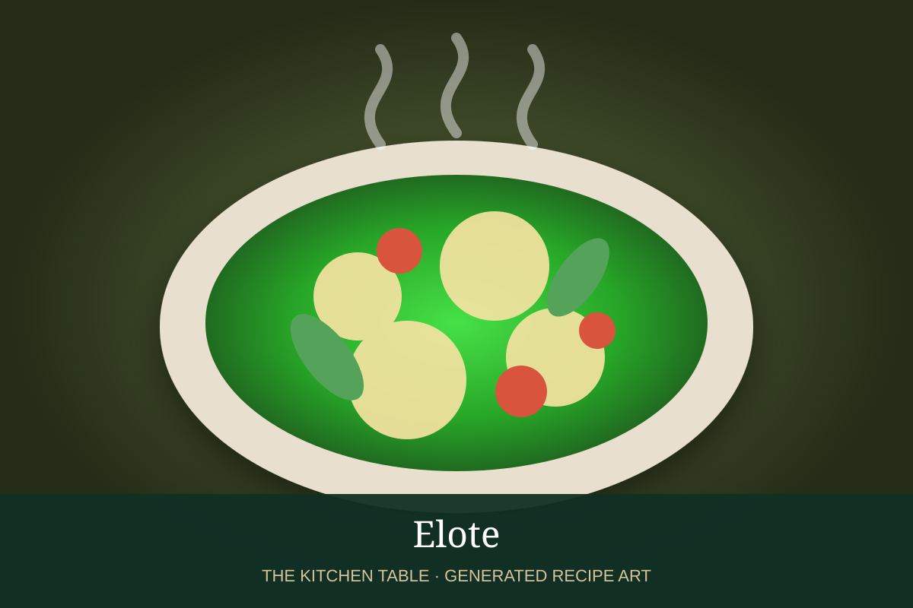

← Back to all recipes
CORN · MEXICAN
Elote
Charred Mexican street corn coated with crema-mayo, cotija, chile, cilantro, and lime.
25 minServes 6

Photo: Punchfork
Ingredients
- 6 ears corn
- 1/3 cup mayonnaise
- 1/3 cup Mexican crema
- 1 cup cotija cheese
- 1 tsp chile powder
- 1/2 cup cilantro
- 2 limes
- Salt
Preparation
- Grill corn until tender and charred in spots.
- Mix mayonnaise and crema.
- Brush corn generously with the mixture.
- Roll or sprinkle with cotija and chile powder.
- Finish with cilantro, lime, and salt.